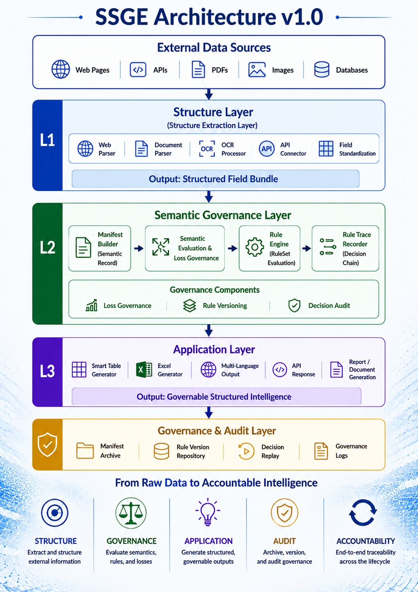

Governance Runtime Architecture for Accountable AI Execution
The Missing Governance Runtime Layer for AI Systems

SSGE introduces a governance runtime layer between AI reasoning and real-world execution. The architecture transforms external information into accountable intelligence through four stages:
Structure → Governance → Application → Audit
Modern AI systems can generate outputs. Modern governance frameworks can define policies. But between AI decisions and real-world execution, a critical runtime governance layer is missing. SSGE fills that gap.
Traditional AI systems focus on generation. SSGE focuses on governance-aware execution. Instead of only producing outputs, SSGE generates traceable decisions, auditable execution paths and reusable governance evidence.
Transforms AI-generated outcomes into structured decision artifacts.
Records execution paths so AI-driven processes can be inspected and reproduced.
Creates reusable governance evidence for review, validation and accountability.
No Source Code. No Model Weights. No Proprietary Algorithms Required.
SSGE can integrate through APIs, middleware or execution pipelines without accessing proprietary technology.
The current prototype demonstrates how SSGE transforms AI execution into governance artifacts.